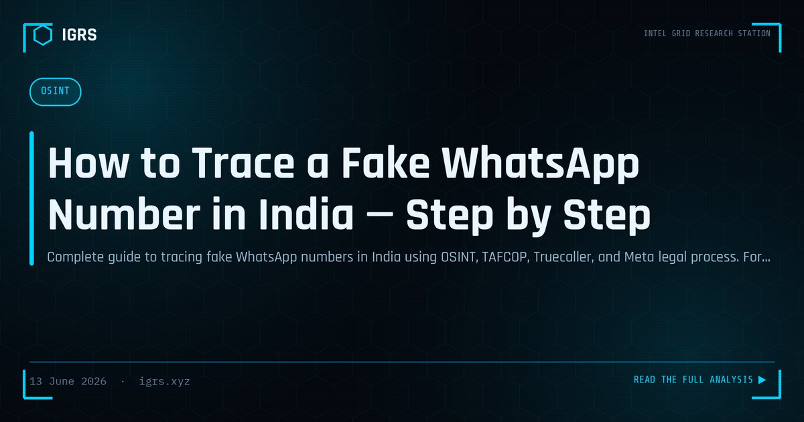

How to Trace a Fake WhatsApp Number in India — Step by Step
Can You Really Trace a Fake WhatsApp Number?
One of the most common questions reaching cyber cells across India is whether a fake or anonymous WhatsApp number can be traced. The answer is yes — every WhatsApp account leaves a digital trail, even those created to harass, defraud, or extort. From simple OSINT techniques anyone can use to formal legal process available to law enforcement, this guide covers the complete methodology for tracing a WhatsApp number in India, along with its real-world limitations.
Stage One: Free OSINT Techniques
Before any legal process, several free techniques establish a preliminary identity picture:
| Technique | What It Reveals |
|---|---|
| Truecaller lookup | Registered name and spam reputation |
| WhatsApp profile analysis | Photo, about text, last-seen patterns |
| Profile photo reverse search | Other accounts using the same image |
| UPI Rs 1 request | Bank account holder name |
| Google search in quotes | Listings, ads, leaked data containing the number |
The WhatsApp profile picture is especially valuable — running it through Google Images, Yandex, or TinEye can reveal whether the photo is stolen, AI-generated, or linked to other identifiable accounts.
Stage Two: Social Media and Cross-Platform Correlation
A phone number is a powerful pivot across platforms. Check whether the number links to profiles on:
- Facebook — many users link their phone to their account
- Telegram — searchable directly by phone number
- Instagram — through contact sync
- Payment apps (Paytm, PhonePe, Google Pay) — often reveal the registered name
- LinkedIn — via the find-by-phone feature
When the same number surfaces across multiple platforms, each profile adds a piece to the identity puzzle, and inconsistencies between them are themselves valuable intelligence.
Stage Three: TAFCOP and SIM Intelligence
The number behind a fake WhatsApp account is tied to a SIM, and that SIM is registered to an Aadhaar. The principle behind TAFCOP (sancharsaathi.gov.in) is central here: fraudulent WhatsApp accounts frequently use mule SIMs registered on someone else's Aadhaar. Identifying the SIM registration pattern helps distinguish a careless individual from an organised operation using stolen identities.
Stage Four: Formal Legal Process via Meta
For law enforcement, the most authoritative data comes from Meta's Law Enforcement Response portal. With proper legal process, investigators can request:
| Data Available | Investigative Value |
|---|---|
| Account creation date and IP | Establishes origin and timeline |
| Linked phone number | Confirms the registered number |
| Last login IP and timestamp | Recent location/ISP attribution |
| Device information | Device fingerprinting |
Meta's standard response time is typically 15-30 days, with an emergency channel for cases involving imminent harm that can yield responses within 24-72 hours.
Stage Five: Telecom CDR and IP Tracing
Once the phone number is confirmed, investigators issue a CDR request through the authorised DoT process. The CDR reveals call patterns, cell tower locations, and connected devices. If the suspect sent a link, a URL tracker can capture their IP when clicked, which combined with CDR location data corroborates physical presence. All such techniques require proper legal authority for evidentiary use.
Important Limitations
WhatsApp tracing has genuine constraints investigators must respect:
- End-to-end encryption means Meta cannot provide message content — only metadata
- VoIP and virtual numbers often lack CDR and Aadhaar linkage in India
- International numbers require slow MLAT processes
- Recycled numbers may yield data about a previous owner
Complete anonymity on WhatsApp is far harder to achieve than fraudsters believe, but no single technique is definitive — corroboration across multiple sources is essential.
Legal Sections for WhatsApp-Based Crimes
| Offence | Section | Act |
|---|---|---|
| Cheating | Section 318 | BNS 2023 |
| Personation by computer | Section 66D | IT Act 2000 |
| Identity theft | Section 66C | IT Act 2000 |
| Criminal intimidation | Section 351 | BNS 2023 |
| Obscene content | Section 67 | IT Act 2000 |
Evidence Preservation for Court
Whatever the tracing method, evidence must be preserved correctly. Screenshot all communications with visible timestamps, export chats with media, compute SHA-256 hashes, and obtain a Section 63 BSA 2023 certificate for any electronic records destined for court. A WhatsApp investigation that produces a confirmed identity but lacks proper evidence handling will not survive judicial scrutiny. Methodical OSINT, corroborated by legal process and supported by sound evidence preservation, is what turns an anonymous WhatsApp number into an identified, prosecutable suspect.